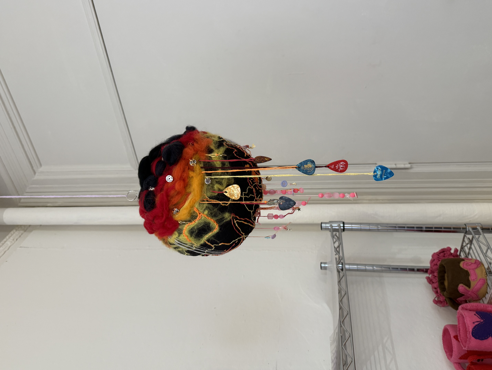

Dichotomy of Woman, 2025
scraps from childhood quilt, fabric, wool roving, stuffing, cardboard, embroidery floss, beads, buttons, charms, guitar picks, metal pin backings
Dichotomy of Woman explores seemingly opposing manifestations of femininity–the coexistence of the so-called “masculine” and “feminine” in a woman. Overt femininity is often demeaned in our society. When I was young, things commonly associated with young girls were derided: Justin Bieber, One Direction, Barbies, painted fingernails, and more. To do something “like a girl” is to do it poorly, implicitly positioning cisgendered men and boys as more naturally skilled. This is harmful to both men and women, creating negative stereotypes and robbing us of our freedom of expression.
As a child, I was a tomboy. I was often mistaken for a boy; I had short hair, my favorite color was blue, and I despised wearing dresses. I did not want to live my life “like a girl.” This rejection of the feminine was subconscious, but led me to push away music, activities, and clothing associated with girls my age.
This piece recognizes my affinity for the “masculine”–my interest in heavy metal music, electric guitar, and dark, moody color palettes. Simultaneously, it allows me to reclaim the “feminine” side of myself, unleashing my repressed “girly girl.” Using scrap fabric from a childhood quilt, I collaged friendship bracelets, beads, buttons, and charms to evoke the sense of girlhood. On the opposing hemisphere of the piece, I embroidered metal pin backings, guitar picks, and lightning bolt charms on the piece to represent my passions more strongly tied to masculinity. The two pieces were stuffed and joined together to form a globe with “night” and “day” sides.